Main Screen
Launching the Mobile Music Shuffler presents the main user interface. On startup, it will load all the music available on your phone and shuffle the list for playback.
It works in either orientation.
I personally use it by putting my phone in a cupholder, so it's typically in landscape thus making the Next button quite prominent.
From left-to-right:
- Previous Song: If the player is paused, it will go to the previous song. If it's playing, it will go back to the beginning of the song, unless you are two seconds or
less into the song, then it will go the previous song. Swipe Gesture: Right-to-left
-
Play/Pause: Plays or pauses the current song. Swipe Gesture: up and down like a letter V
-
Next Song: A regular press goes to the next song. A long press will go to the next song by the same artist. Swipe Gesture: Left-to-right
-
Other swipe gestures: Draw a circle to reload all songs. Draw a zig-zag (letter Z) to bring up playlists.
If a song is playing and you hit the Back or Home button on your phone, the song will continue playing and a notification will be displayed with the title and artist allowing you
to get back to the app. If a song is not being played, hitting the back button will "exit" the application and clear any notification.
In the lower-left, it shows you how many songs are loaded. In the lower-right, it shows you the current song's position and duration.
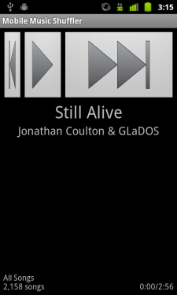
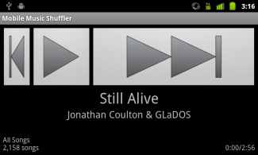
Gestures
By default, gesstures are enabled but can be configured to your liking or turned off entirely. Check the Settings menu for customizations.
Left-to-right (next song) or right-to-left (previous song)
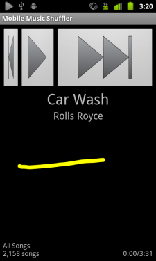
Right arrow (next song by same artist)
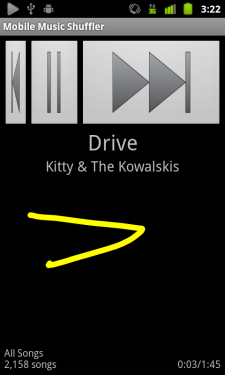
Down arrow (play/pause)
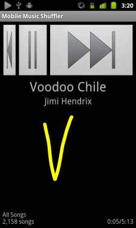
Zigzag (playlists)
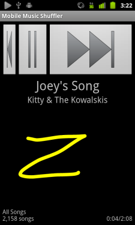
Circle (all songs)
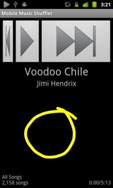
Search
Hitting the search button will bring up a search dialog. Don't do this while you're driving.
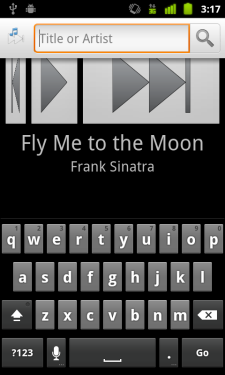
The search function combines the artist and title and then looks for all the keywords you entered in that combination. Let's see what sort of
Frank Sinatra we have.
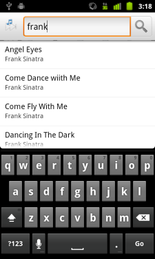
Well, maybe we want Relax by Frankie Goes to Hollywood instead. We don't need to type Frankie, just the first part of Relax to filter the list even further.
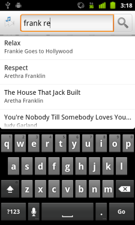
You don't even need to use full words. It will do partial word searches as well. Let's find Crush 'Em by Megadeth.
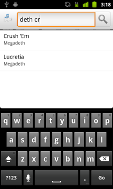
Clicking Go will bring up a full list of matches. If I search for Cash, you'll see I'm a big fan of the man in black.
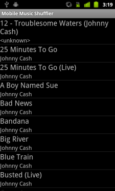
Clicking on a match in any of these screens will start playing the song right away.